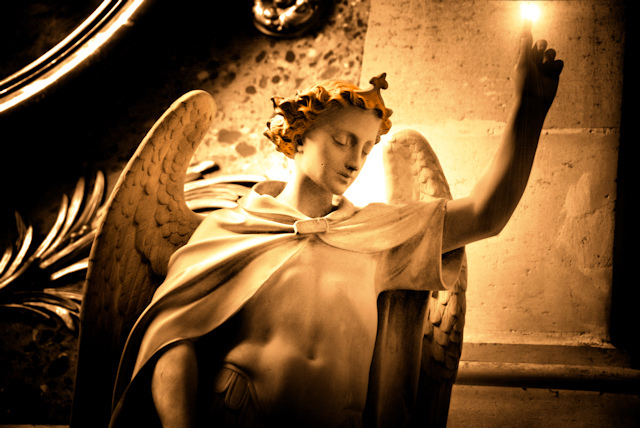

Błogosławiona, Radosna, Jaśniejąca
Styczeń roku 1914. Rilkem owładnia niepokojące uczucie, iż być może już nigdy w swym życiu nie doświadczy owej upragnionej miłości, która mogłaby istnieć w tle jego dzieła, uczynić je „czystszym, jaśniejszym, bardziej przejrzystym”, nie domagając się w zamian niczego.
Jednakże wkrótce potem poeta otrzymuje list, który tchnie nowe życie w jego rozorane serce. Wyszedł on spod pióra mieszkającej w Wiedniu pianistki Magdy von Hattingberg, która po lekturze „Powiastek o Panu Bogu” zapragnęła złożyć ich autorowi podziękowania. Wyraziła przy tym nadzieję, iż „życie będzie dla mnie łaskawe i gdzieś, kiedyś, pozwoli mi Pana spotkać”.
Rilke, nie zwlekając, sięgnął po papier i odpisał uradowany, nadając swym słowom podobny ton, jaki pobrzmiewał w jej liście.
Droga przyjaciółko, nie pozwól, by ten nowy, miły oku płomień zagasł, nawet jeśli tylko z rzadka mogę dorzucić drobne ziarenko żywicy mego serca, byś nasyciła się jego zapachem.
Słowa Magdy niespodziewanie rozbudziły w nim nadzieję. Poeta pożądliwie uchwycił się myśli o „wspaniałej przyszłości”, przyszłości, „która ma w sobie moc sprowadzić na mnie burze, nawałnice i deszcz oczyszczenia, istne wstrząsy wszechświata, jakich tylko zapragnie”.
Otrzymując wiele podobnych listów Magda poczuła, iż to ona może stać się ową wytęsknioną przez niego ukochaną. Nieodparte pragnienie dzielenia z kimś myśli wyrwało Rilkego z „jałowego trwania w bierności”, ufał, że wreszcie odnalazł swą siostrzaną duszę. Do tej pory zawsze towarzyszyło mu uczucie, iż wbrew swej woli pozwalał się wikłać w związki, które okazywały się dlań bezowocne; tym razem jednak stanie się inaczej. Magda była dla niego „Benvenutą”, „mile widzianą”, jego „drogim sercem”, „ukochaną siostrą”, do której mógł mówić „jak do obłoków i głębin mojego nieba”.
Do spotkania doszło pod koniec lutego w Berlinie. Przez kilka krótkich tygodni wydawało się, że ziściły się wszelkie nadzieje poety. Magda wprowadziła go w świat muzyki, grając dlań kompozycje Haendla, Bacha, Scarlattiego. Wydawało się, że oto u jej boku otwiera się przed Rilkem pogodna i szczęśliwa przyszłość. Przez pewien czas będą wspólnie podróżować, przeżywając idyllę, o jakiej, pełni żarliwości, snuli myśli w swych listach. Wyruszą do Monachium, później, wędrując przez jej rodzinne strony w Tyrolu, udadzą się do Zurychu, Bazylei, w końcu zawitają do Paryża, gdzie dzięki jej obecności w serce poety zacznie wstępować nadzieja, iż powróci do swej twórczej pracy. A jednak…
W liście do swej siostry Magda rozważała, czy pokochała Rilkego tak, jak kobieta kocha mężczyznę, „tego jedynego, z którym pragnie przeżyć całe życie”. I musiała sobie odpowiedzieć: nie.
On jest dla mnie głosem Boga, nieśmiertelną duszą, Fra Angelico, wszystkim, co nadziemsko Dobre, Wzniosłe, Święte — lecz nie człowiekiem.
Rilke zwierzył się księżnej Marie von Thurn und Taxis, iż jego marzenie o kobiecie, która byłaby gotowa „czuwać nad jego samotnością”, okazało się niedościgłe. Uświadomił sobie bowiem, że Magda nie potrafiła spełnić nadziei, jakie w niej pokładał. Ona zaś zdawała sobie sprawę, że wiążąc się z poetą, nigdy nie mogłaby ofiarować mu tego, czego pragnął. Nie darmo słuchała, jak częstokroć powtarzał aforyzm Kassnera „Droga od intymności do wielkości prowadzi przez ofiarę”. Zrozumiała, iż jego powołanie wymagało ofiary — poświęcenia ich wspólnego marzenia. Sama natomiast pragnęła znaleźć kogoś, kto miałby dość siły, by poprowadzić ją ku „opiekuńczej pewności niepodzielonego świata”, nie zaś nieziemskiego Fra Angelico, który mógł być dla niej jedynie dobiegającym z oddali głosem pocieszenia.
Oboje postanowili udać się w ostatnią wspólną podróż do Wenecji. Tam rozstaną się — na zawsze.
Fragmenty listów Rilkego i Magdy von Hattingberg oraz biografii poety „Dźwięczące szkło” D. Pratera w przekładzie autora.